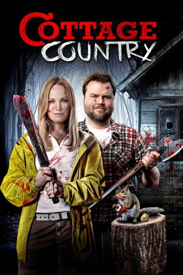

#6131 Cottage Country
 
 IMDB-Wertung: 5.6 / 10
IMDB-Wertung: 5.6 / 10  Tomatometer: 20
Tomatometer: 20  Metascore: 0
Metascore: 0 
Todd und Cammie sind ein Spießerpaar wie es im Buche steht. Als endlich der langersehnte Urlaub im Haus von Todds Eltern ansteht, beschließt dieser seiner Herzdame vor Ort einen romantischen Heiratsantrag zu machen. Als allerdings unangekündigter Familienbesuch vor der Türe steht, stellt sich schnell heraus: Blut ist dicker als Wasser.
Jahr: 2013
Dauer: 91 Minuten
FSK: 16
Land: Kanada Studio: Capelight PicturesTonspuren:
Untertitel: Deutsch,
Auflösung: 1080p (1920x1080) Größe: 7454 MB
Genre: Horror, Komödie, Krimi, Liebe
Regisseur: Peter Wellington
Drehbuch: Paul Harris Boardman
Soundtrack:
Darsteller:
 Malin Akerman als Cammie Ryan
Malin Akerman als Cammie Ryan Tyler Labine als Todd Chipowski
Tyler Labine als Todd Chipowski Lucy Punch als Masha
Lucy Punch als Masha- Dan Petronijevic als Salinger Chipowski
- Benjamin Ayres als Dov Rosenberg
 Kenneth Welsh als Earl
Kenneth Welsh als Earl- Sabrina Grdevich als Sergeant Mackenzie
 Jim Annan als Constable Grant
Jim Annan als Constable Grant- Jonathan Crombie als Dan Mushin
- Bill Turnbull als Stoned Kid
- Wayne V. Johnson als Police Officer , uncredited
- Nancy Beatty als Mary
- Earl Pastko als Vagrant
- Jason C. Paul als Hipster I
- Chuck Erlichman als Balladeer I
- Beau Ferris als Cannon Ball Guy
- Spencer Birman als Party Guy
- Randy Brown als Forensic Police Officer , uncredited
Datei: X:\2013(A-F)\Cottage Country (2013, FSK16, 1920x1080).mkv seit 04.05.2017
Festplatte: HD 2012(N-Z)-2013(A-H)
 Es gibt insgesamt 127 Filme in der Gruppe '2013(A-F)'
Es gibt insgesamt 127 Filme in der Gruppe '2013(A-F)'